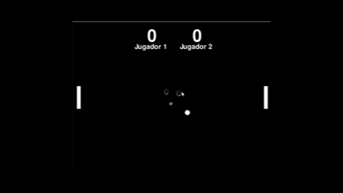
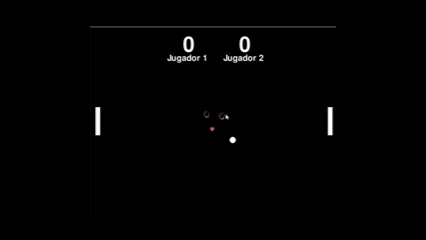

Space Inn Vaders
Un shooter espacial clásico desarrollado con Pygame. Inspirado en Space Invaders pero con mi propio estilo.
Jugar / Descargar Repositorio 

Pong Multiplayer
Versión multijugador del clásico Pong, creada desde cero con Pygame.
Jugar / Descargar Repositorio